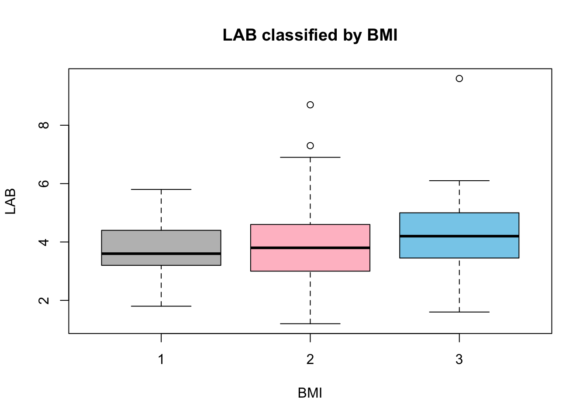
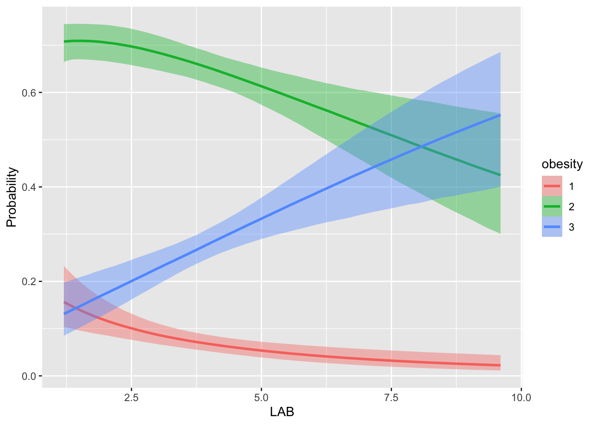
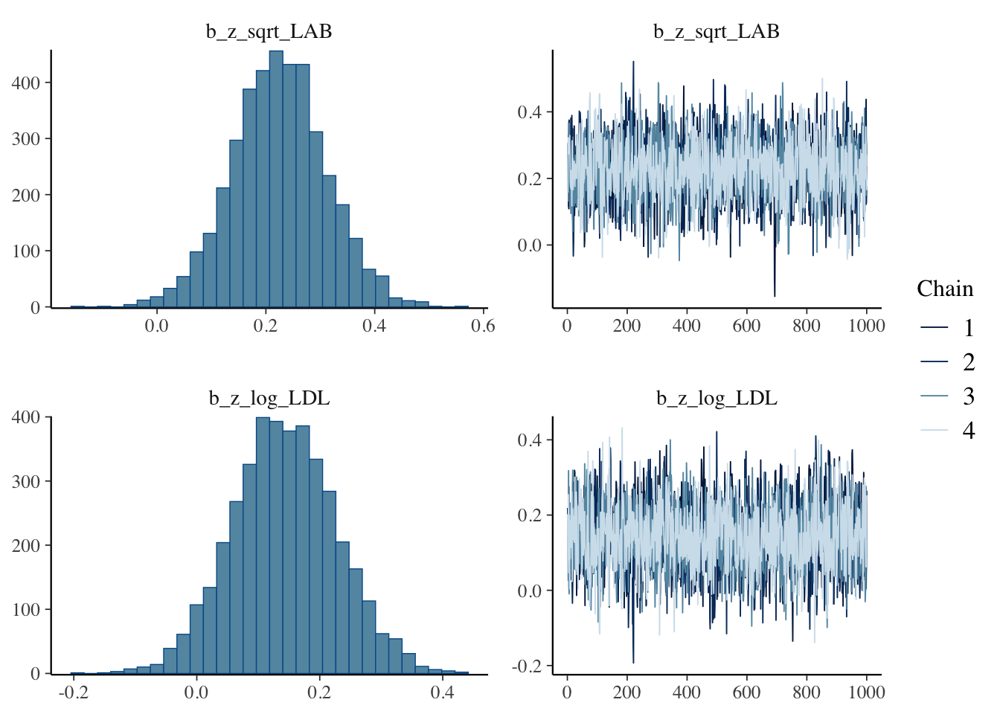
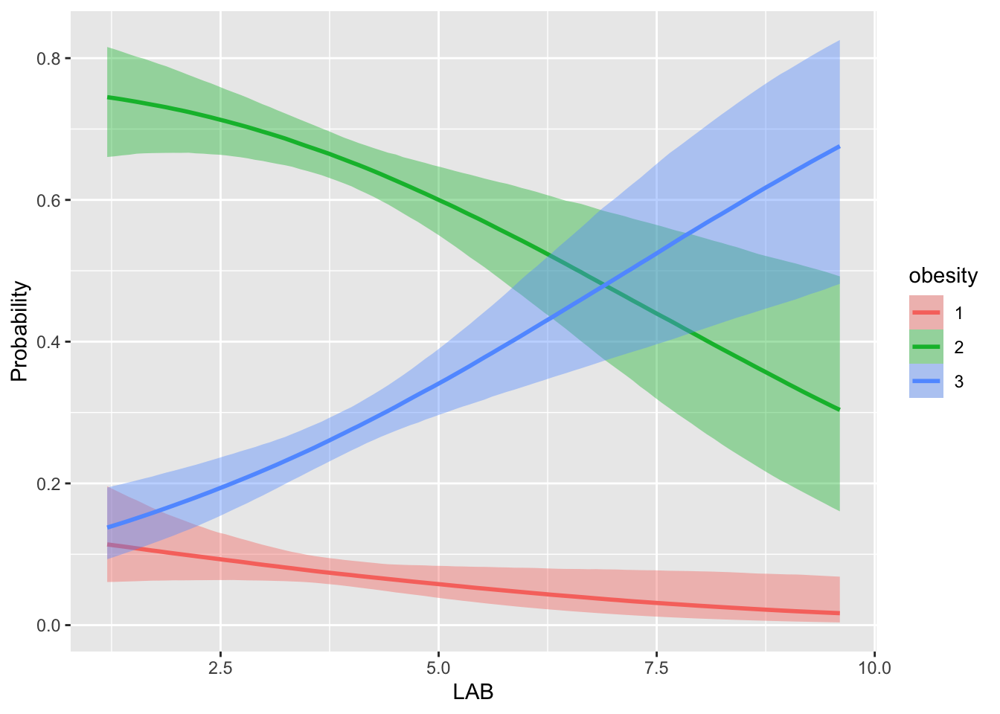

ベイズデータ解析６
応答が質的変数の場合
2024-12-05
ロジスティック回帰分析は離散的な応答データを扱うことのできる一般化線型モデルである． 他にも，高度に非線型な関係が予期される場合，ノンパラメトリック手法に移る前の簡単な非線型解析としても活躍する． 本稿では BMI と LDL の非線型関係に関する探索的手法として，順序ロジスティック回帰分析を実行する．
A Blog Entry on Bayesian Computation by an Applied Mathematician
$$
$$
多くの社会的なデータは非数値的である．しかしその背後には潜在的な連続変数を想定することが多い．
加えて，線型回帰分析の結果複雑な非線型関係が予期された際，本格的なノンパラメトリック推論に移る前に，離散変数の設定に換言して非線型性を扱いやすくするなど，離散変数を扱う積極的理由もある．
本稿ではロジスティック回帰を主に扱う．
ここでは BMI と LDL コレステロールの関係を見る．
一般に HDL コレステロールは BMI と正の相関がある（特に２型糖尿病患者では (Hussain et al., 2019)）．
cor(raw_df$BMI, raw_df$HDL)[1] -0.3689261一方で LDL コレステロールと BMI の相関は弱い：
cor(raw_df$BMI, raw_df$LDL)[1] 0.158966しかし全く無関係ではないように見える：
boxplot(
raw_df$LDL ~ raw_df$obesity,
col = c("pink", "lightgreen", "skyblue"),
main = "LDL classified by BMI",
xlab = "BMI",
ylab = "LDL"
)これは LDL と BMI の関係は非線型性が高く，その非線型関係が男女，さらに年齢で違うためかもしれない (Li et al., 2021)．
この関係を詳しく見ていくことで何か発見があるかもしれないだろう．
LAB (Inoue et al., 2010) は酸化変性した LDL のことで，別名超悪玉コレステロールと知られる．LDL コレステロールよりも動脈硬化リスクを（特に残余リスクとして）反映する新しいバイオマーカーになり得ると期待されている (Okamura et al., 2013)．
LAB と LDL の相関は高くない：
cor(raw_df$BMI, raw_df$LAB)[1] 0.1952133boxplot(
raw_df$LAB ~ raw_df$obesity,
col = c("gray", "pink", "skyblue"),
main = "LAB classified by BMI",
xlab = "BMI",
ylab = "LAB"
)
ここでは LAB と LDL の BMI への影響を比較したい．
BMI と LDL の関数関係は非線型性が予期される (Li et al., 2021)．
そこで BMI を直接被説明変数とするのではなく，離散化した順序変数 obesity を導入する：
raw_df <- raw_df %>%
mutate(obesity = case_when(
BMI < 18.5 ~ 1, # underweight
BMI < 25 ~ 2, # normal
BMI >= 25 ~ 3 # obese
))LDL を直接用いて推定すると係数が極めて小さくなるため，対数変換によりスケールを変換して説明変数に入れる：
\[ \operatorname{P}[\texttt{obesity}>1]=g^{-1}(\beta_{\texttt{LDL}}\cdot\log(\texttt{LDL})-c_1) \] \[ \operatorname{P}[\texttt{obesity}>2]=g^{-1}(\beta_{\texttt{LDL}}\cdot\log(\texttt{LDL})-c_2) \]
formula_LDL <- bf(
obesity ~ log(LDL),
family = cumulative(link = "logit")
)
# prior_LDL <- prior(normal(0,0.1), class = b, coef = "logLDL")
fit_LDL <- brm(
formula_LDL,
data = raw_df,
chains = 4, cores = 4
# prior = prior_LDL
)summary(fit_LDL) Family: cumulative
Links: mu = logit; disc = identity
Formula: obesity ~ log(LDL)
Data: raw_df (Number of observations: 839)
Draws: 4 chains, each with iter = 2000; warmup = 1000; thin = 1;
total post-warmup draws = 4000
Regression Coefficients:
Estimate Est.Error l-95% CI u-95% CI Rhat Bulk_ESS Tail_ESS
Intercept[1] 2.05 1.26 -0.42 4.52 1.00 2671 2228
Intercept[2] 5.62 1.27 3.12 8.12 1.00 2606 2280
logLDL 0.97 0.27 0.46 1.50 1.00 2622 2226
Further Distributional Parameters:
Estimate Est.Error l-95% CI u-95% CI Rhat Bulk_ESS Tail_ESS
disc 1.00 0.00 1.00 1.00 NA NA NA
Draws were sampled using sampling(NUTS). For each parameter, Bulk_ESS
and Tail_ESS are effective sample size measures, and Rhat is the potential
scale reduction factor on split chains (at convergence, Rhat = 1).LDL が上がるごとに，normal や underweight から obese に移る確率が上がるのが見える．
conditional_effects(fit_LDL, "LDL", categorical = TRUE)prior_summary(fit_LDL) prior class coef group resp dpar nlpar lb ub source
(flat) b default
(flat) b logLDL (vectorized)
student_t(3, 0, 2.5) Intercept default
student_t(3, 0, 2.5) Intercept 1 (vectorized)
student_t(3, 0, 2.5) Intercept 2 (vectorized)\(c_1,c_2\) には \(0\) を中心とした \(t\)-事前分布が置かれているため，識別性は保たれると考えて良い．
実は LDL よりも LAB の方が少し予測力が高い．しかも LAB は \([1,10]\) に値を取るので，対数変換をするよりも平方根変換をする方が自然である：
formula_LAB <- bf(
obesity ~ sqrt(LAB),
family = cumulative(link = "logit")
)
fit_LAB <- brm(
formula_LAB,
data = raw_df,
chains = 4, cores = 4
)loo_compare(loo(fit_LDL), loo(fit_LAB)) elpd_diff se_diff
fit_LAB 0.0 0.0
fit_LDL -2.2 3.9 conditional_effects(fit_LAB, "LAB", categorical = TRUE)
LAB が上昇すると underweight, normal から obese に移る確率がグンと上がるのが見える．
前節で LAB と LDL を比較すると，前者のみを用いたモデルの方が予測力が高いことを見た．
では両方をモデルに入れてベイズ推論をすることで，２つの情報を統合したより良いモデルができるだろうか？
df_double <- data.frame(
obesity = raw_df$obesity,
z_sqrt_LAB = scale(sqrt(raw_df$LAB)),
z_log_LDL = scale(log(raw_df$LDL))
)
formula_double <- bf(
obesity ~ z_sqrt_LAB + z_log_LDL,
family = cumulative(link = "logit")
)
fit_double <- brm(
formula_double,
data = df_double,
chains = 4, cores = 4
)実際予測性能の面では両方入れたモデルの方が良いようである：
loo_compare(loo(fit_LAB), loo(fit_double)) elpd_diff se_diff
fit_double 0.0 0.0
fit_LAB -0.3 1.7 plot(fit_double, variable = c("b_z_sqrt_LAB", "b_z_log_LDL"))
LDL の方が僅かに縮小されて推定されていることがわかる．
さらには LAB と LDL がモデルに入っている確率を出す方法は別稿で追求する：
formula_double_confound <- bf(
obesity ~ z_sqrt_LAB * z_log_LDL,
family = cumulative(link = "logit")
)
fit_double_confound <- brm(
formula_double_confound,
data = df_double,
chains = 4, cores = 4
)plot(fit_double_confound, variable = c("b_z_sqrt_LAB", "b_z_log_LDL", "b_z_sqrt_LAB:z_log_LDL"))若干の交絡の存在が疑われる．LDL が大きいほど，LAB と BMI との関係は減少していき，逆もまた然りである．
これは共線型性が強いので当然とも思われる：
cor(df_double$z_sqrt_LAB, df_double$z_log_LDL)[1] 0.5204453しかし必ずしも条件数が大きいわけではない．
X <- model.matrix(~ z_sqrt_LAB + z_log_LDL, data = df_double)
kappa(X)[1] 1.879479underweight, normal, obese 間の順序構造を無視して，カテゴリカル分布を通じてモデリングをしても，実は当てはまりは必ずしも悪くない．
formula_nominal <- bf(
obesity ~ LAB,
family = categorical(link = "logit")
)
fit_nominal <- brm(
formula_nominal,
data = raw_df,
chains = 4, cores = 4
)waic(fit_LAB)
Computed from 4000 by 839 log-likelihood matrix.
Estimate SE
elpd_waic -686.0 18.5
p_waic 2.8 0.1
waic 1372.0 37.0waic(fit_nominal)
Computed from 4000 by 839 log-likelihood matrix.
Estimate SE
elpd_waic -685.8 18.6
p_waic 3.7 0.2
waic 1371.6 37.2ほとんど質的には一致した結果を得る：
conditional_effects(fit_nominal, "LAB", categorical = TRUE)
ひょっとしたら，BMI を離散化したという点で順序変数に思えるかもしれないが，これは単なる思い込みで，「痩せている」ことと「太っている」ことに順序関係を仮定することはむしろノイズになっているのかもしれない．
raw_df$sqrt_LAB <- sqrt(raw_df$LAB)
raw_df$log_Age <- log(raw_df$Age)
formula_LAB_cov <- bf(
obesity ~ log_Age + SEX + log_Age:SEX + (0 + SEX | sqrt_LAB),
family = categorical(link = "logit")
)
fit_LAB_cov <- brm(
formula_LAB_cov,
data = raw_df,
chains = 4, cores = 4
)summary(fit_LAB_cov) Family: categorical
Links: mu2 = logit; mu3 = logit
Formula: obesity ~ log_Age + SEX + log_Age:SEX + (0 + SEX | sqrt_LAB)
Data: raw_df (Number of observations: 839)
Draws: 4 chains, each with iter = 2000; warmup = 1000; thin = 1;
total post-warmup draws = 4000
Multilevel Hyperparameters:
~sqrt_LAB (Number of levels: 56)
Estimate Est.Error l-95% CI u-95% CI Rhat
sd(mu2_SEXfemale) 0.20 0.14 0.01 0.54 1.00
sd(mu2_SEXmale) 0.20 0.14 0.01 0.53 1.00
sd(mu3_SEXfemale) 0.48 0.23 0.05 0.94 1.01
sd(mu3_SEXmale) 0.28 0.19 0.01 0.70 1.00
cor(mu2_SEXfemale,mu2_SEXmale) -0.12 0.57 -0.97 0.92 1.00
cor(mu3_SEXfemale,mu3_SEXmale) -0.10 0.54 -0.96 0.90 1.00
Bulk_ESS Tail_ESS
sd(mu2_SEXfemale) 1288 1735
sd(mu2_SEXmale) 1118 1308
sd(mu3_SEXfemale) 792 963
sd(mu3_SEXmale) 1027 1614
cor(mu2_SEXfemale,mu2_SEXmale) 2097 2182
cor(mu3_SEXfemale,mu3_SEXmale) 1638 1708
Regression Coefficients:
Estimate Est.Error l-95% CI u-95% CI Rhat Bulk_ESS Tail_ESS
mu2_Intercept -4.06 1.92 -7.89 -0.26 1.00 2108 2674
mu3_Intercept -6.39 2.35 -11.05 -1.71 1.00 2049 2334
mu2_log_Age 1.55 0.50 0.55 2.56 1.00 2069 2656
mu2_SEXmale 12.79 5.40 2.66 24.16 1.00 994 1566
mu2_log_Age:SEXmale -2.98 1.34 -5.79 -0.43 1.00 1004 1534
mu3_log_Age 1.81 0.61 0.63 3.02 1.00 2028 2315
mu3_SEXmale 14.91 5.62 4.64 26.55 1.00 933 1490
mu3_log_Age:SEXmale -3.31 1.40 -6.16 -0.73 1.00 945 1525
Draws were sampled using sampling(NUTS). For each parameter, Bulk_ESS
and Tail_ESS are effective sample size measures, and Rhat is the potential
scale reduction factor on split chains (at convergence, Rhat = 1).conditional_effects(fit_LAB_cov, "SEX", categorical = TRUE)一般に男性の方が太っている確率が高くなる．これはよく知られているようである．
conditional_effects(fit_LAB_cov, "log_Age", conditions = list(SEX = "male"), categorical = TRUE)conditional_effects(fit_LAB_cov, "log_Age", conditions = list(SEX = "female"), categorical = TRUE)女性は年齢とともに太る傾向が見えるが，男性はそうでもない（むしろ逆である）ようである．
そして共変量を追加したことでモデルの予測力が大きく良くなっている：
loo_compare(loo(fit_LAB), loo(fit_LAB_cov))Warning: Not all models have the same y variable. ('yhash' attributes do not
match) elpd_diff se_diff
fit_LAB_cov 0.0 0.0
fit_LAB -11.2 8.1 pp_check(fit_LAB_cov)Using 10 posterior draws for ppc type 'dens_overlay' by default.BMI と LDL は，骨ミネラル密度 (BMD: Bone Mineral Density) に因果的な影響を与えることが知られている (Wu, 2024)．
P1NP は骨形成マーカー，ALP は骨の形成や骨疾患の評価に役立つ酵素である．
deoxypyridinolin (DPD) は骨を構成するⅠ型コラーゲンを束ねる蛋白質で、骨吸収の指標になる．
他に Ca, Mg などの値もある．
データの不均衡性に着想を得て，「太っているかいないか？」の後に「痩せ気味かどうか？」という２つのロジット回帰の連続とみることを考える．
raw_df <- raw_df %>%
mutate(obesity_former = case_when(
BMI < 25 ~ 0, # normal
BMI >= 25 ~ 1 # obese
))
raw_df <- raw_df %>%
mutate(obesity_latter = case_when(
BMI < 18.5 ~ 0, # underweight
BMI >= 18.5 ~ 1 # normal
))formula_former <- bf(
obesity_former ~ LAB,
family = bernoulli(link = "logit")
)
fit_former <- brm(
formula_former,
data = raw_df,
chains = 4, cores = 4
)
formula_latter <- bf(
obesity_latter ~ LAB,
family = bernoulli(link = "logit")
)
fit_latter <- brm(
formula_latter,
data = raw_df,
chains = 4, cores = 4
)